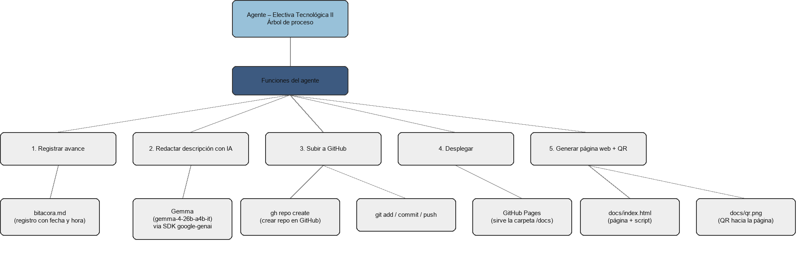

Este proyecto universitario vincula un árbol de procesos en Obsidian con un agente automatizado en Python. El agente registra avances, gestiona el despliegue en GitHub Pages y genera una página de documentación que incluye su propio código y un código QR, automatizando integralmente el flujo desde la planificación hasta la publicación web.

# Bitacora del agente - **2026-09-04 15:34** Inicio de ejecucion del agente. - **2026-09-04 15:34** No hay GEMINI_API_KEY configurada, se usa texto por defecto. - **2026-09-04 15:34** Pagina web generada en docs/index.html. - **2026-09-04 15:37** Inicio de ejecucion del agente. - **2026-09-04 15:37** No hay GEMINI_API_KEY configurada, se usa texto por defecto. - **2026-09-04 15:37** Pagina web generada en docs/index.html. - **2026-09-04 15:42** Inicio de ejecucion del agente. - **2026-09-04 15:43** Pagina web generada en docs/index.html. - **2026-09-04 15:44** Inicio de ejecucion del agente. - **2026-09-04 15:45** Repositorio git inicializado. - **2026-09-04 15:45** Repositorio 'agente-electiva-tecnologica' creado en GitHub. - **2026-09-04 15:45** Pagina web generada en docs/index.html. - **2026-09-04 15:45** Cambios subidos a GitHub: Version inicial del agente y la pagina - **2026-09-04 15:45** GitHub Pages activado (POST). - **2026-09-04 15:45** QR generado apuntando a https://KeynnerXe.github.io/agente-electiva-tecnologica/. - **2026-09-04 15:45** Pagina web generada en docs/index.html. - **2026-09-04 15:45** Cambios subidos a GitHub: Agrega QR apuntando a la pagina desplegada - **2026-09-04 15:50** Inicio de ejecucion del agente. - **2026-09-04 15:50** El remoto 'origin' ya existe.
"""
Agente para la Electiva Tecnologica II.
Funciones que cumple este agente:
1. Llevar una bitacora de avance del proyecto (bitacora.md).
2. Consultar a Gemini (API de Google AI Studio) para redactar la
descripcion del proyecto.
3. Inicializar el repositorio, crearlo en GitHub y subir los cambios.
4. Desplegar el proyecto en GitHub Pages.
5. Generar la pagina web final (docs/index.html) con la informacion
del proyecto y su propio script.
6. Generar el codigo QR que apunta a la pagina ya desplegada.
Uso:
python agent.py -> ejecuta el flujo completo
python agent.py --dry-run -> genera la pagina localmente, sin git/GitHub
"""
import argparse
import html
import json
import os
import subprocess
import sys
from datetime import datetime
from pathlib import Path
from dotenv import load_dotenv
from google import genai
from google.genai import types
ROOT = Path(__file__).resolve().parent
DOCS = ROOT / "docs"
BITACORA = ROOT / "bitacora.md"
AGENT_SOURCE = Path(__file__)
TREE_IMAGE_CANDIDATES = ["arbol.png", "arbol.jpg", "arbol.svg"]
load_dotenv(ROOT / ".env")
GEMINI_API_KEY = os.getenv("GEMINI_API_KEY", "")
GEMINI_MODEL = os.getenv("GEMINI_MODEL", "gemma-4-26b-a4b-it")
DEFAULT_DESCRIPTION = (
"Este proyecto conecta un arbol de proceso construido en Obsidian "
"con un agente que automatiza el registro de avances, la subida a "
"GitHub, el despliegue en GitHub Pages y la generacion de esta pagina."
)
_client = None
def get_client() -> genai.Client:
global _client
if _client is None:
_client = genai.Client(api_key=GEMINI_API_KEY)
return _client
GITHUB_REPO_NAME = os.getenv("GITHUB_REPO_NAME", "agente-electiva-tecnologica")
REPO_VISIBILITY = os.getenv("REPO_VISIBILITY", "public")
def log(message: str) -> None:
"""Registra un avance en bitacora.md y lo imprime en consola."""
timestamp = datetime.now().strftime("%Y-%m-%d %H:%M")
line = f"- **{timestamp}** {message}\n"
if not BITACORA.exists():
BITACORA.write_text("# Bitacora del agente\n\n", encoding="utf-8")
with BITACORA.open("a", encoding="utf-8") as f:
f.write(line)
print(f"[bitacora] {message}")
def run_cmd(cmd: list[str], cwd: Path = ROOT, check: bool = True) -> str:
"""Ejecuta un comando de shell y devuelve su salida."""
result = subprocess.run(
cmd, cwd=cwd, capture_output=True, text=True, shell=False
)
if check and result.returncode != 0:
raise RuntimeError(
f"Fallo el comando {' '.join(cmd)}:\n{result.stdout}\n{result.stderr}"
)
return result.stdout.strip()
def ask_gemini(prompt: str) -> str:
"""Envia un prompt a Gemma (via el SDK google-genai) y devuelve el texto de respuesta."""
if not GEMINI_API_KEY:
log("No hay GEMINI_API_KEY configurada, se usa texto por defecto.")
return DEFAULT_DESCRIPTION
try:
client = get_client()
response = client.models.generate_content(
model=GEMINI_MODEL,
contents=[
types.Content(
role="user",
parts=[types.Part.from_text(text=prompt)],
),
],
)
return response.text.strip()
except Exception as exc:
log(f"Fallo la llamada a Gemma ({exc}), se usa texto por defecto.")
return DEFAULT_DESCRIPTION
def ensure_git_repo() -> None:
if not (ROOT / ".git").exists():
run_cmd(["git", "init"])
run_cmd(["git", "branch", "-M", "main"])
log("Repositorio git inicializado.")
def ensure_github_remote() -> str:
"""Crea el repo en GitHub (si no existe) y devuelve el usuario dueno."""
try:
run_cmd(["git", "remote", "get-url", "origin"])
log("El remoto 'origin' ya existe.")
except RuntimeError:
visibility_flag = "--public" if REPO_VISIBILITY == "public" else "--private"
run_cmd(
[
"gh", "repo", "create", GITHUB_REPO_NAME,
visibility_flag, "--source=.", "--remote=origin",
]
)
log(f"Repositorio '{GITHUB_REPO_NAME}' creado en GitHub.")
owner = run_cmd(["gh", "api", "user", "-q", ".login"])
return owner
def commit_and_push(message: str) -> None:
run_cmd(["git", "add", "-A"])
diff = run_cmd(["git", "diff", "--cached", "--name-only"], check=False)
if not diff:
log("No hay cambios nuevos para commitear.")
return
run_cmd(["git", "commit", "-m", message])
run_cmd(["git", "push", "-u", "origin", "main"])
log(f"Cambios subidos a GitHub: {message}")
def enable_github_pages(owner: str) -> str:
"""Activa GitHub Pages sirviendo la carpeta docs/ y devuelve la URL final."""
repo_path = f"repos/{owner}/{GITHUB_REPO_NAME}/pages"
try:
run_cmd(["gh", "api", "-X", "POST", repo_path,
"-f", "source[branch]=main", "-f", "source[path]=/docs"])
log("GitHub Pages activado (POST).")
except RuntimeError:
try:
run_cmd(["gh", "api", "-X", "PUT", repo_path,
"-f", "source[branch]=main", "-f", "source[path]=/docs"])
log("GitHub Pages actualizado (PUT).")
except RuntimeError as exc:
log("No se pudo activar Pages automaticamente, hazlo manual en "
"Settings > Pages (branch: main, carpeta: /docs).")
print(exc)
return f"https://{owner}.github.io/{GITHUB_REPO_NAME}/"
def find_tree_image() -> str | None:
for name in TREE_IMAGE_CANDIDATES:
if (ROOT / name).exists():
return name
return None
def build_site(description: str, page_url: str | None, qr_relpath: str | None) -> None:
"""Genera docs/index.html con la info del proyecto y el codigo del agente."""
DOCS.mkdir(exist_ok=True)
source_code = html.escape(AGENT_SOURCE.read_text(encoding="utf-8"))
bitacora_text = (
html.escape(BITACORA.read_text(encoding="utf-8"))
if BITACORA.exists() else "Aun no hay entradas."
)
tree_image = find_tree_image()
tree_section = (
f'<img src="{tree_image}" alt="Arbol del proceso" class="tree-img">'
if tree_image else
"<p>(Coloca aqui un export de tu arbol de Obsidian como "
"<code>arbol.png</code> en la raiz del proyecto y vuelve a correr el agente.)</p>"
)
qr_section = (
f'<img src="{qr_relpath}" alt="QR de esta pagina" class="qr-img">'
f'<p><a href="{page_url}">{page_url}</a></p>'
if qr_relpath and page_url else
"<p>El QR se genera despues del primer despliegue.</p>"
)
html_content = f"""<!doctype html>
<html lang="es">
<head>
<meta charset="utf-8">
<title>Agente - Electiva Tecnologica II</title>
<style>
body {{ font-family: system-ui, sans-serif; max-width: 900px; margin: 40px auto;
padding: 0 20px; line-height: 1.6; color: #1a1a1a; }}
h1, h2 {{ color: #10467a; }}
pre {{ background: #0d1117; color: #c9d1d9; padding: 16px; overflow-x: auto;
border-radius: 8px; font-size: 13px; }}
.tree-img, .qr-img {{ max-width: 320px; display: block; margin: 12px 0; }}
section {{ margin-bottom: 40px; }}
</style>
</head>
<body>
<h1>Agente de la Electiva Tecnologica II</h1>
<section>
<h2>Descripcion del proyecto</h2>
<p>{html.escape(description)}</p>
</section>
<section>
<h2>Arbol del proceso (Obsidian)</h2>
{tree_section}
</section>
<section>
<h2>Bitacora de avance</h2>
<pre>{bitacora_text}</pre>
</section>
<section>
<h2>Script del agente (agent.py)</h2>
<pre><code>{source_code}</code></pre>
</section>
<section>
<h2>QR de esta pagina</h2>
{qr_section}
</section>
</body>
</html>
"""
(DOCS / "index.html").write_text(html_content, encoding="utf-8")
log("Pagina web generada en docs/index.html.")
def generate_qr(url: str) -> str:
import qrcode
img = qrcode.make(url)
img.save(DOCS / "qr.png")
log(f"QR generado apuntando a {url}.")
return "qr.png"
def main() -> None:
parser = argparse.ArgumentParser()
parser.add_argument("--dry-run", action="store_true",
help="Genera la pagina localmente sin tocar git/GitHub.")
args = parser.parse_args()
log("Inicio de ejecucion del agente.")
description = ask_gemini(
"Redacta en un parrafo (maximo 60 palabras) la descripcion de un "
"proyecto universitario que conecta un arbol de proceso hecho en "
"Obsidian con un agente automatizado en Python que registra avances, "
"sube el proyecto a GitHub, lo despliega en GitHub Pages y genera "
"una pagina con su propio codigo y un QR."
)
if args.dry_run:
build_site(description, page_url=None, qr_relpath=None)
print("\nListo (dry-run). Abre docs/index.html en tu navegador.")
return
ensure_git_repo()
owner = ensure_github_remote()
build_site(description, page_url=None, qr_relpath=None)
commit_and_push("Version inicial del agente y la pagina")
page_url = enable_github_pages(owner)
qr_relpath = generate_qr(page_url)
build_site(description, page_url=page_url, qr_relpath=qr_relpath)
commit_and_push("Agrega QR apuntando a la pagina desplegada")
print(f"\nListo. En unos minutos tu pagina estara en: {page_url}")
if __name__ == "__main__":
main()
El QR se genera despues del primer despliegue.